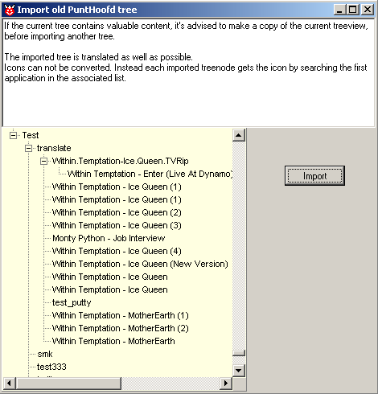

December, 2004
Global Settings
Checking for new Versions
The program can automatically check for new versions (not only for the program itself, but also for the included compilers).
See for more information: History & Downloads

Import PuntHoofd Document Lists
The Global Settings Menu contains a button to import old PuntHoofd lists. The imported list is added at the end of the current treeview.
